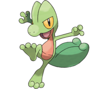
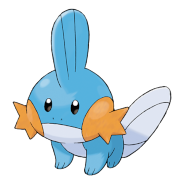

You start your journey! Welcome to 3° gereration!
You can install pokemon emerald here
The firts step is:
Chosse your first pokémon:
Torchic #0255

- Type:
- Fire 🔥
- Weaknesses:
- Water
- Ground
- Rock
- Description:
- Torchic feels toasty warm if you hug it. It has a flame sac inside its belly, and the flames burn continuously as long as Torchic has life in it.
You can acesse the original website
Treecko

- Type:
- Grass 🍃
- Weaknesses:
- Fire
- Ice
- Poison
- Flying
- Bug
- Description:
- The small hooks on the soles of its feet latch on to walls and ceilings, so it will never fall even while hanging upside down.
You can acesse the original website
Mudkip

- Type:
- Water 💧
- Weaknesses:
- Grass
- Eletric
- Description:
- It has the power to crush large boulders into pieces. To rest, it buries itself in mud at the bottom of a river.
You can acesse the original website
The next step is:
- Fight your opponent
- Talk with mom
- Revive
- Pick the package in another city and deliver to the teacher
And you can also buy some items that helped on you jouney:
- Pokeboll
- Potions
- Revivers
Types of pokeboll
- Pokeboll
- You can buy it starting from the first store
- Great boll
- You can buy it starting from the first store
- Ultra boll
- Released after obtained 5 bagdes
- Master boll
- Can be picked up after clearing the story